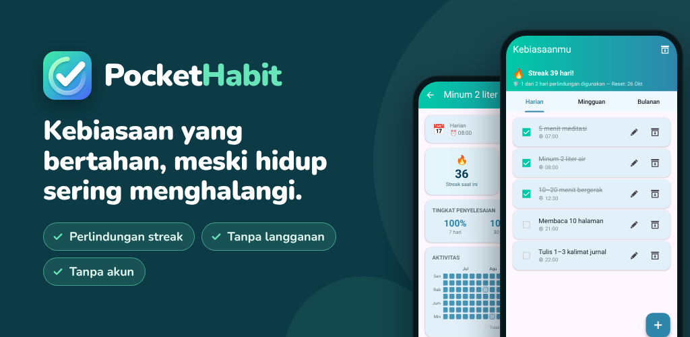

PocketHabit: Pelacak Kebiasaan
Pelacak kebiasaan dengan perlindungan streak – fleksibel & tanpa langganan.
Google PlayIngin membangun kebiasaan yang lebih baik, tapi hidup selalu menghalangi? PocketHabit adalah pelacak kebiasaan yang memberimu ruang untuk tetap menjadi manusia.
DIBUAT UNTUK PEMULA
Tanpa pengaturan rumit. Tanpa akun. Tanpa langganan. Cukup buka aplikasi, tambahkan kebiasaan pertamamu, dan mulai. Pengenalan singkat membuatmu siap dalam waktu kurang dari satu menit.
CARA KERJANYA
- Tambahkan kebiasaan pertamamu – atau pilih dari saran siap pakai saat pengenalan
- Centang dengan sekali ketuk
- Lihat streak-mu tumbuh – perlindungan streak menahan hari-hari yang tidak berjalan sesuai rencana
TIDAK ADA YANG SEMPURNA
Perlindungan streak PocketHabit yang unik memahami bahwa perubahan nyata butuh waktu. Jika kamu melewatkan satu hari, streak-mu tidak langsung putus – kamu punya cadangan yang membantumu kembali ke jalur. Kamu yang menentukan seberapa ketat:
- Pemula: 2 hari terlewat per minggu diizinkan
- Mudah: 1 hari terlewat per minggu
- Normal: 1 hari terlewat per 14 hari
- Sulit: 1 hari terlewat per bulan
Berkembanglah sesuai kecepatanmu – dan saat kamu siap, naikkan tingkat kesulitannya.
SEMUA KEBIASAANMU, SATU APLIKASI
Baik rutinitas harian, tugas mingguan, maupun target bulanan – PocketHabit menangani semuanya:
- Harian: rutinitas pagi, olahraga, minum air
- Mingguan: pilih hari-hari tertentu dalam seminggu
- Bulanan: tanggal tetap atau misalnya "setiap Senin ke-2 dalam sebulan"
PENGINGAT YANG SESUAI DENGANMU
Daripada mengatur pengingat terpisah untuk setiap kebiasaan, aktifkan satu pengingat harian global. Buka aplikasi, centang semuanya sekaligus. Semudah itulah sebuah rutinitas. Lebih suka waktu masing-masing? Setiap kebiasaan juga bisa punya pengingatnya sendiri.
APLIKASIMU, GAYAMU
Pilih dari berbagai tema warna dan beralih antara Mode Gelap dan Mode Terang. Aplikasi yang senang kamu buka setiap hari membantumu tetap konsisten.
STATISTIK YANG MEMOTIVASI
Lihat sekilas pencapaianmu minggu ini dan bulan ini. Tampilan detail menampilkan heatmap penyelesaianmu, tingkat penyelesaian, dan streak terbaik pribadimu.
- Kalender bulanan: setiap hari diberi warna sesuai seberapa banyak yang kamu selesaikan
- Ringkasan per hari: lihat hari mana yang paling lancar untukmu
- Tingkat penyelesaian 7, 30, dan 90 hari terakhir
PENCAPAIAN YANG MEMOTIVASI
30 pencapaian menghargai kemajuanmu: streak 7 hari pertamamu, minggu dan bulan yang sempurna, bahkan comeback-mu setelah jeda.
DOSIS MOTIVASI HARIAN
Setiap hari dimulai dengan lembar baru dari kalender sobekmu – salah satu dari 240 kutipan singkat yang membantumu terus melangkah.
DATAMU, KENDALIMU
- Ekspor kebiasaanmu sebagai file cadangan dan pulihkan di ponsel baru
- Jeda kebiasaan di arsip – statistiknya tetap tersimpan
UNTUK SIAPA PELACAK KEBIASAAN INI?
Untuk siapa saja yang ingin mulai dari hal kecil dan tetap konsisten – entah minum lebih banyak air, membaca setiap malam, olahraga tiga kali seminggu, atau menjaga rumah tetap rapi. Terutama jika aplikasi kebiasaan yang terlalu ketat pernah membuatmu menyerah hanya karena satu hari terlewat.
PREMIUM: BAYAR SEKALI, UNTUNG SELAMANYA
Tanpa langganan. Tanpa biaya bulanan. Upgrade sekali dan nikmati selamanya:
- Sepenuhnya bebas iklan
- Akses ke semua tema
- Riwayat statistik lebih dari 2 tahun (bukan 6 bulan)
- Perlindungan streak tanpa menonton iklan
- Semua fitur Premium mendatang sudah termasuk
DIBUAT BERSAMA PENGGUNA, UNTUK PENGGUNA
PocketHabit tumbuh bersamamu. Fitur baru hanya dikembangkan jika pengguna nyata benar-benar menginginkannya. Masukanmu penting – hubungi kami dan bantu membuat aplikasi ini lebih baik.
Privasi: Semua data kebiasaanmu tetap tersimpan di perangkatmu. Tidak perlu akun.
Unduh sekarang dan ambil langkah pertama menuju versi terbaik dirimu.